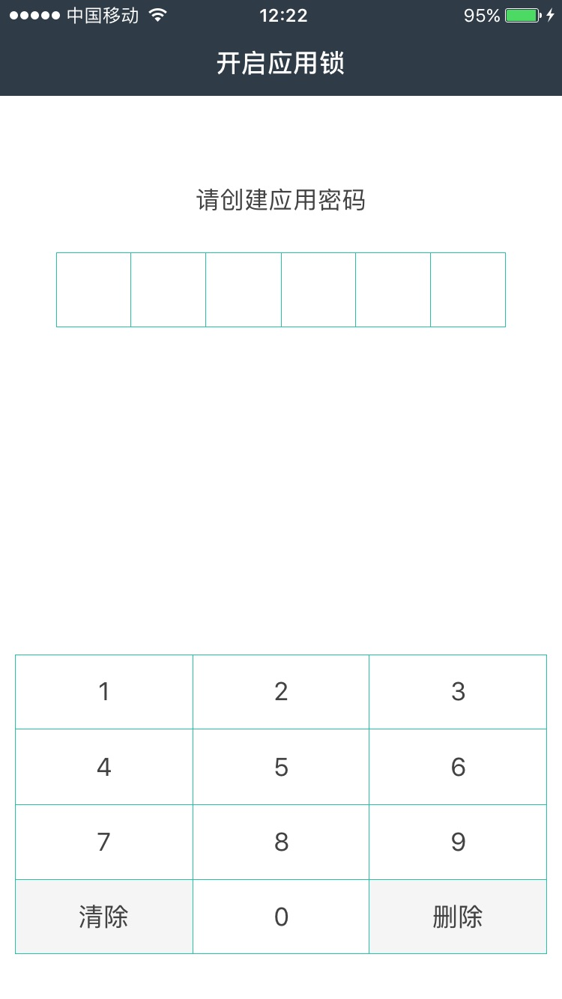
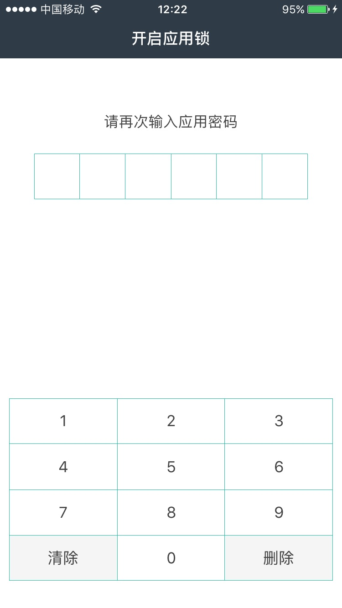
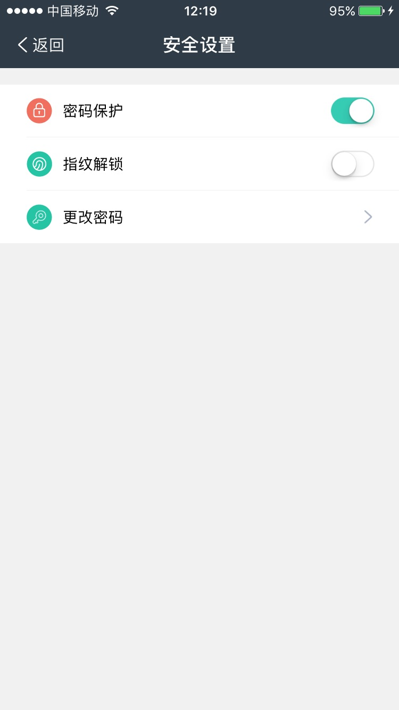
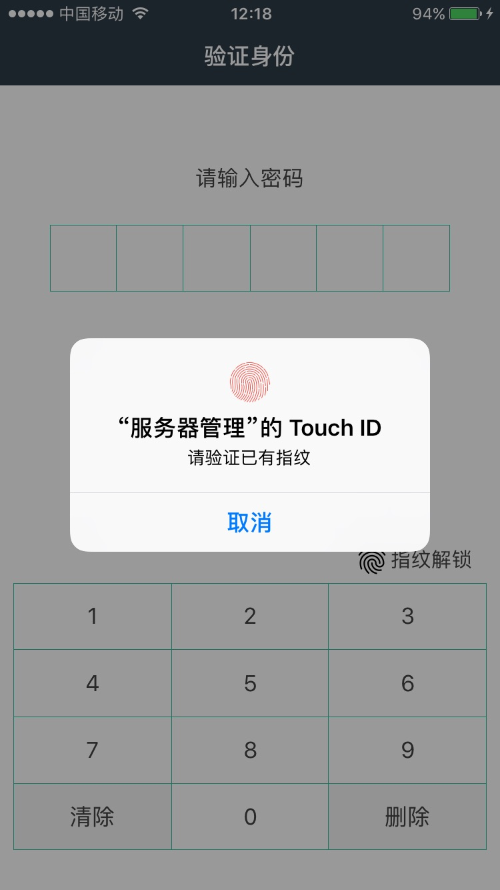

如何使用APP的密码保护
1
、创建APP密码
在第一次使用应用时，从安全角度出发，需要设置应用访问密码。之后APP退出再登陆或超时未操作APP，需要输入密码才能进入APP。


2
、关闭密码保护
设置步骤："我的"->"安全设置"，点击"密码保护"关闭。

3
、指纹解锁
在密码保护功能开启状态时，可以设置指纹解锁（默认关闭）。
设置步骤：“我的”->“安全设置”，点击“指纹解锁”。
在指纹解锁开启状态，在APP退出或超时未操作时，再次进入APP，优先提供指纹解锁方式进入APP。

4
、密码更改
当密码保护处于开启状态时，可以更改密码来修改应用安全锁的密码。
设置步骤：“我的”->“安全设置”，点击“更改密码”。